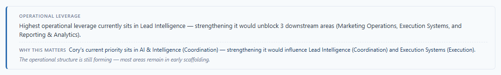
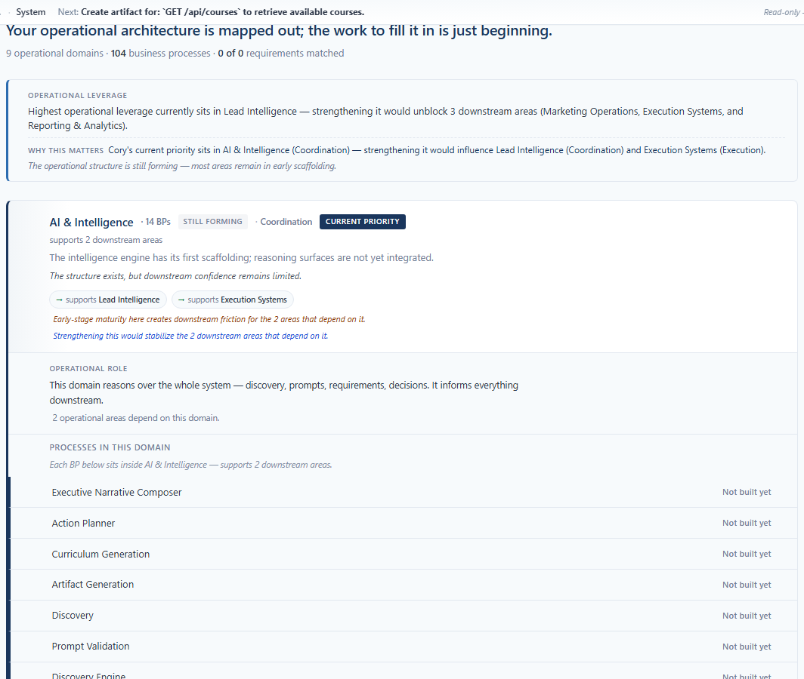
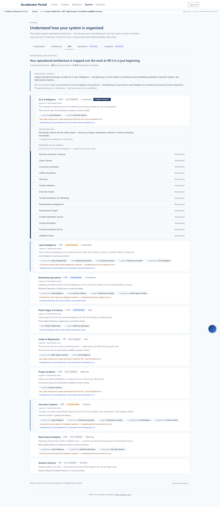

Shipped 2026-05-16 to enterprise.colaberry.ai (commit
1a9942e). Four bounded refinements that resolve the
three deferred audit findings from the prior sprint plus broader
vocabulary coherence. No new infrastructure, no new components,
no new computation. Every change is editorial.
docs/OPERATIONAL_VOCABULARY.md)
documenting what that vocabulary is so future additions don't
drift.
Every change here maps to a deferred audit finding or a vocabulary-drift observation from the inventory of nine editorial-text helpers:
| Origin | Phase | What shipped |
|---|---|---|
| Audit finding #2 (prior sprint) — chip reads taxonomic, not navigational | A | Text-only chip with leading · joins title-row dot rhythm |
| Audit finding #3 (prior sprint) — "Why this matters" doesn't reference pathway stages | B | Parentheticals on priority + downstream labels |
| Audit finding #1 (prior sprint) — inherited-context sentence repeats 14× in large domains | C | Single italic section header above the BP list (operator chose this option) |
| Vocabulary inventory: "downstream operational area" vs "downstream area" drift across helpers | D | Standardized to "downstream area" everywhere |
| Vocabulary inventory: "operational system" vs "operational structure" drift | D | Standardized to "operational structure" everywhere |
| New: governance artifact for canonical terms | D | docs/OPERATIONAL_VOCABULARY.md |
The chip used the same uppercase letter-spaced badge style as the
trust-label badge. Operator and reviewer alike could read them as
sibling category tags. The refinement: drop the background fill,
drop the uppercase, drop the letter-spacing, and prepend a leading
· that continues the title row's existing
dot-separator rhythm.
Before: COORDINATION (uppercase, muted background, letter-spaced)
After: · Coordination (text-only, joins the row's editorial fragments)
Production capture — title row of the priority domain:
BPDomainSurfaceRows.tsx — no prop changes, no helper changes.Two vocabularies that previously lived beside each other now compose. The leverage block's "Why this matters" line carries pathway-stage parentheticals on both the priority domain AND each downstream target. Operator reads one coherent sentence in one vocabulary, not two adjacent ones in two vocabularies.
Before:
Cory's current priority sits in AI & Intelligence — strengthening it would influence Lead Intelligence and Execution Systems.
After (live on prod):
Cory's current priority sits in AI & Intelligence (Coordination) — strengthening it would influence Lead Intelligence (Coordination) and Execution Systems (Execution).

whyThisMattersSentence in coryPriorityMatcher.ts now imports pathwayStageLabel and composes parentheticals.buckets parameter — when passed, downstream targets get their parentheticals too; when omitted (test scenarios), gracefully falls back to plain labels.other domain omits its parenthetical — no (null) artifact.other silence). Suite at 291 (was 289).The per-BP italic inherited-context sentence repeated 14 times in immediate vertical sequence when a domain with 14 BPs was expanded. Operator instruction: do not remove dependency continuity — vary, compress, intelligently reduce density.
Operator-locked decision: single section header. The sentence now appears ONCE above the BP list, in the same section as the existing "Processes in this domain" subheader. Each BP row below is clean — name + builtness word, nothing else.
Before: 14 italic "In AI & Intelligence — supports 2 downstream areas" repeats, one per BP row.
After: ONE italic "Each BP below sits inside AI & Intelligence — supports 2 downstream areas." in the section header.

bpInheritedContext.ts: helper now returns the section-header phrasing ("Each BP below sits inside…") rather than the per-row form ("In…").BPDomainSurfaceRows.tsx: section header renders once above the BP list. BPLine loses its domainLabel + domainDownstreamCount props + the per-row sub-line render.inheritedAccent prop on BPLine (priority/downstream left-border) stays — that signal is dependency-marker, not vocabulary-repeat, and remains valuable per-row.The exploration agent's audit of nine editorial helpers surfaced stylistic drift on two high-impact terms. Both standardized:
| Concept | Was (drift) | Now (canonical) | Where |
|---|---|---|---|
| Downstream count framing | downstream operational area(s) |
downstream area(s) |
operationalLeverage.ts — downstreamSupportLine() |
| System-level subject | Your operational system … |
Your operational structure … |
operationalLeverage.ts — systemEvolutionPhrase() (5 occurrences) |
Plus 2 test assertions updated. Plus a written governance artifact:
docs/OPERATIONAL_VOCABULARY.md — one-page canonical-terms reference grouped by concept: pathway stages, maturity / trust labels, builtness tiers, downstream vocabulary, structure-vs-system, "Why this matters" shape, inherited domain context, momentum directions, and an anti-vocabulary list. No build-time enforcement — governance artifact only.
operationalLeverage.ts — 3 prose changes for "downstream area" + 5 prose changes for "operational structure".operationalLeverage.test.ts — 2 assertion updates.docs/OPERATIONAL_VOCABULARY.md — canonical reference.The complete BPs surface, captured after deploy. Chip refinement, enriched leverage sentence, vocabulary alignment, and single section header all visible together in one frame:

The platform now speaks one operational vocabulary across pathway chip, leverage block, inherited-context header, and resilience sentence. The 14× inherited-context repetition is gone. The chip reads as wayfinding instead of category. A written governance artifact captures the canonical terms so future additions don't drift back into ad-hoc phrasing.